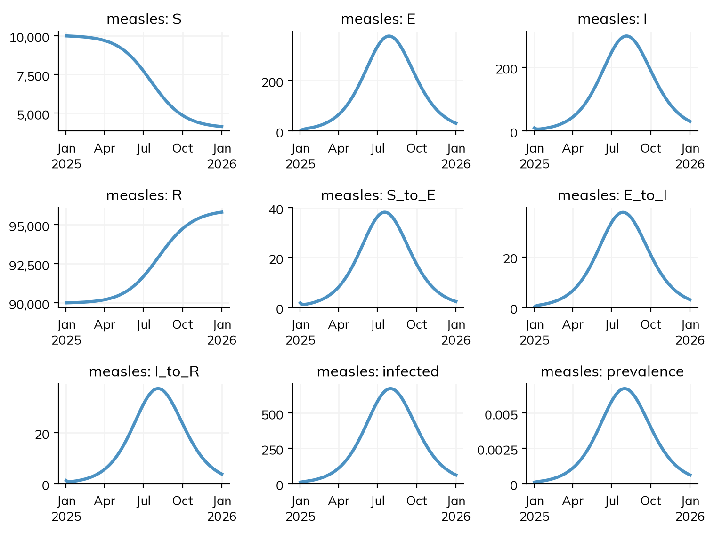
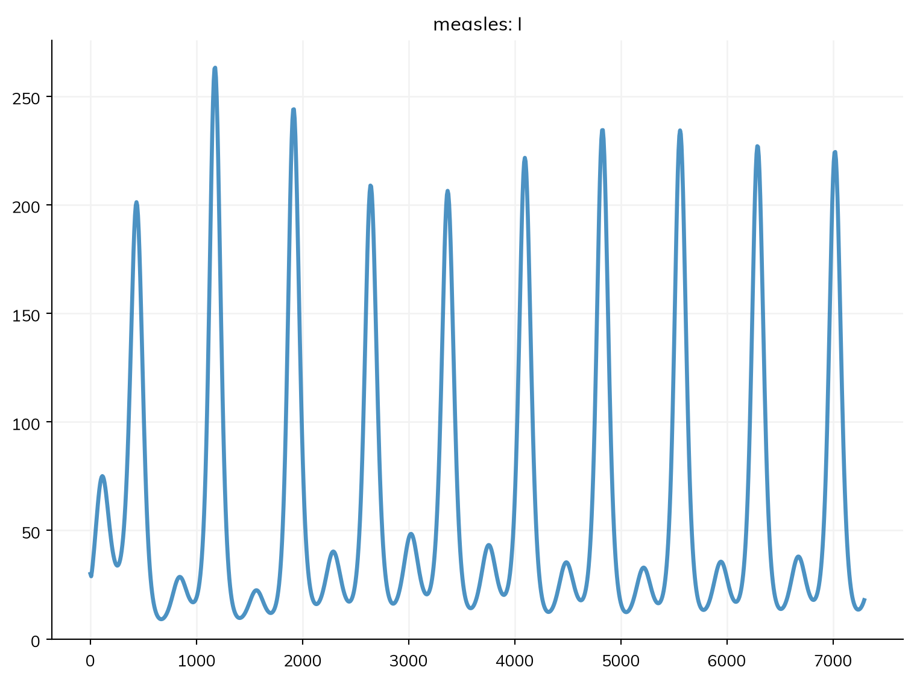

A model written for another framework can be read into Starsim, and a Starsim model can be written out in formats other tools read. Importing is useful for checking a model against its original, for running it in ways the original can’t (as agents, or fitted with gradients), or for building on it in Starsim. Each framework in the formats has a page on the lingua_franca site (for example odin and EpiModel) that shows a model from it written both ways, and how closely the results agree; Comparison with other frameworks compares them all. For Starsim 3 code, see the migration guide.
Importing a model
ss.import_from() reads a model file into a sim. Here is the measles model of the tutorials written in odin, a language for compartmental models in R, saved to a temporary folder:
import osimport tempfileimport numpy as npimport sciris as scimport starsim as ssodin_code ='''deriv(S) <- -beta * S * I / Nderiv(E) <- beta * S * I / N - sigma * Ederiv(I) <- sigma * E - gamma * Ideriv(R) <- gamma * Iinitial(S) <- N - I_init - R_initinitial(E) <- 0initial(I) <- I_initinitial(R) <- R_initN <- user(100000) # Population sizeI_init <- user(10) # Number infectious at the startR_init <- user(90000) # Number immune at the startbeta <- user(1.9) # Transmission rate, per daysigma <- user(0.1) # 1 / latent period (10 days)gamma <- user(0.125) # 1 / infectious period (8 days)'''folder = tempfile.mkdtemp()filename = os.path.join(folder, 'measles.R')sc.savetext(filename, odin_code)sim = ss.import_from(filename, start='2025-01-01', dur=ss.days(365))
Imported "measles" from odin: 4 states, 3 transitions, 4 parameters
S -> E beta * S * I / N : S taken out of the flow; N taken as the total [guessed: N = 100000, the number of people at the start]; exposure to I (divided by the total: frequency-dependent) => beta * I
E -> I sigma * E : E taken out of the flow; spontaneous => sigma
I -> R gamma * I : I taken out of the flow; spontaneous => gamma
The format is told from the file (or given with format='odin'). odin has no time unit, so its numbers are taken to be per day (unit= says otherwise), and has no stop, so the sim needs stop= or dur=; start= gives it dates. Other arguments change the model as it is read: pars=dict(beta=1.5) gives a parameter another value, and dt= a step.
The importer prints how it read each rate, which is the first thing to check. Each deriv() is written as total flows in and out, as in most textbooks and frameworks, while a Starsim transition is a rate per person, so each importer divides each total flow by the state people leave, and classifies what is left:
A flow written as
Is read as
gamma * I
A rate gamma per person in I, whatever anyone else is doing
beta * S * I / N
Frequency-dependent transmission: beta * I, exposure to the fraction infectious
beta * S * I
Density-dependent transmission: beta * I.n, exposure to the number infectious
Anything else
The expression itself, as a rate of counts, which is exact under every solver
Checking and finishing an import
The imported model is an ordinary Starsim sim, and runs like any other:
sim.run()sim.plot()
Sim: measles, 100,000 people, as an ODE, 2025-01-01 to 2026-01-01
measles: R0 = 15.2 (R = 1.52 at the start, with 10% susceptible), with 10 infectious at the start
Done in 0.0023 s; measles: 5,858 infections; at most 298 infectious, on 2025-08-05

sim.describe() shows the model as Starsim built it, with each guess marked, as for a model written by hand:
sim.describe()
Sim 1 module, 100,000 people, 2025-01-01 to 2026-01-01
solver
ode
requested
auto would choose: ode (every part of the model has a compartmental form)
unit
day
Disease 'measles' 4 states, 3 transitions
states
S, E, I, R
I infectious
init: S = 9990 people, I = 10 people, R = 90000 people
S_to_E
S -> E transmission, from I
guessed: name built from its endpoints
beta = 1.9 per day
rate = 1.9 × I.n / N
homogeneous mixing
imported as exposure to I (divided by the total: frequency-dependent)
guessed
E_to_I
E -> I spontaneous
guessed: name built from its endpoints
time in E ~ exponential(rate = 0.1 per day)
I_to_R
I -> R spontaneous
guessed: name built from its endpoints
time in I ~ exponential(rate = 0.125 per day)
Mixing and interventions
mixing
homogeneous, 1 contact per day
guessed: no network given
Results and running
results
S, E, I, R, and one flow per transition; also infected, prevalence
plan
measles: as compiled code, the whole run in one call
schedule
every day: measles
Per step of measles 1 day
S_to_E
beta = 1.9 per day → 1.9 per step
E_to_I
rate 0.1 per day → p = 1 - exp(-0.1 × 1) = 0.0952 per step
I_to_R
rate 0.125 per day → p = 1 - exp(-0.125 × 1) = 0.1175 per step
Here the importer guessed the names of the transitions (such as S_to_E, since odin doesn’t name flows) and the total population N. The solver is an ODE, as odin uses, so that the results can be checked against odin’s. Matching results is a validation check, not a proof that two models are the same: two models can agree on one trajectory and differ at other parameter values, starting conditions, or solvers. So compare their structure as well (each one’s describe()), and their results in more than one setting where it matters. Here is the import against the same model written in Starsim (see T3 – Building a disease):
S, E, I, R = ss.states('S E I R')infection = S >> E @1.9*Iprogression = E >> I @ ss.days(10)recovery = I >> R @ ss.days(8)measles = ss.Disease(infection, progression, recovery, init_n=dict(I=10, R=90_000), name='measles')mine = ss.Sim(measles, total_pop=100_000, start='2025-01-01', dur=ss.days(365))mine.run()theirs = sim.results[sim.diseases[0].name]print('Largest difference in I:', abs(theirs.I.values - mine.results.measles.I.values).max())
Sim: measles, 100,000 people, as an ODE, 2025-01-01 to 2026-01-01
measles: R0 = 15.2 (R = 1.52 at the start, with 10% susceptible), with 10 infectious at the start
Done in 0.0018 s; measles: 5,858 infections; at most 298 infectious, on 2025-08-05
Largest difference in I: 0.0
Where two models differ, the describe() of each, side by side, shows how. For a framework installed alongside Starsim, the best check is against its own results; each framework’s page (linked from the formats) does this.
The import can then be run in any of the ways Starsim runs a model. sim.new() makes a new sim from the same inputs, with whatever is given changed; here it is run as agents, which odin can’t do (see Solvers and backends):
agents = sim.new(solver='abm', n_agents=100_000) # One agent per personagents.run()print('Peak infectious, ODE:', round(theirs.I.max()), '; agents:', round(agents.results[agents.diseases[0].name].I.max()))
Sim: measles, as 100,000 agents, 2025-01-01 to 2026-01-01
Note: consider a shorter step (e.g. dt=ss.days(0.25)): each step is 1 day, and S_to_E transmits at up to 1.9 per day (with everyone infectious), 85% in a step (and I is fast too). Taking whole steps, agents may differ from the ODE by an amount of that order; sim.check_dt() shows how much it matters
Done in 0.56 s; measles: 5,924 infections; at most 329 infectious, on 2025-07-07
Peak infectious, ODE: 298 ; agents: 329
Keeping the code
An import gives Starsim code: the importer writes the model as Python, and the sim is that code run. The code is kept as sim.imported.code, to be kept, read, and changed like a model written by hand. It says where the model came from and how each rate was read, and ends with anything that wasn’t translated:
print(sim.imported.code)
# Imported from odin (measles.R) by ss.import_from()
#
# How each rate was read:
# S -> E beta * S * I / N : S taken out of the flow; N taken as the total [guessed: N = 100000, the number of people at the start]; exposure to I (divided by the total: frequency-dependent) => beta * I
# E -> I sigma * E : E taken out of the flow; spontaneous => sigma
# I -> R gamma * I : I taken out of the flow; spontaneous => gamma
import starsim as ss
# Parameters
N = ss.par(100000.0)
beta = ss.par(1.9)
gamma = ss.par(0.125)
sigma = ss.par(0.1)
# States
S, E, I, R = ss.states('S E I R')
# Transitions and outcomes
S_to_E = S >> E @ (beta * I)
E_to_I = E >> I @ sigma
I_to_R = I >> R @ gamma
measles = ss.Disease(
S, E, I, R, S_to_E, E_to_I, I_to_R,
init_n = dict(S=9990, I=10, R=90000),
default_state = 'S',
name = 'measles',
)
sim = ss.Sim(diseases=[measles], solver='ode', unit='day', start='2025-01-01', dur=ss.days(365), total_pop=100000.0)
if __name__ == '__main__':
sim.run()
sim.plot()
The code is yours to edit: give transitions better names, write rates as the durations they stand for, and add what Starsim has that the original doesn’t (age groups, interventions, a fit to data). sc.savetext('measles.py', sim.imported.code) writes it to a file, and ss.converters.convert(filename) imports a model and saves its code in one step (beside the original, with the extension .py, unless filename= is given); the saved code also runs faster than reading a slow format again.
Finishing an incomplete import
An importer translates what it can, and lists the rest by name rather than guessing (such as code written in the original language, or a formula it can’t read): the sim runs without those parts, and lists them in a warning (ss.errors.ImportIncomplete) and in sim.imported.incomplete (empty for the import above, whose sim.imported.format is 'odin'). Here is the measles model over 20 years, with births, deaths, and seasonal transmission:
seasonal_code ='''deriv(S) <- mu * N - beta * S * I / N - mu * Sderiv(E) <- beta * S * I / N - sigma * E - mu * Ederiv(I) <- sigma * E - gamma * I - mu * Ideriv(R) <- gamma * I - mu * RN <- S + E + I + Rbeta <- beta0 * (1 + amp * cos(2 * 3.141593 * t / 365)) # Highest at the start of each yearinitial(S) <- 7000initial(E) <- 30initial(I) <- 30initial(R) <- 92940beta0 <- user(1.9) # Mean transmission rate, per dayamp <- user(0.2) # Size of the seasonal cycle, relative to the meansigma <- user(0.1) # 1 / latent period (10 days)gamma <- user(0.125) # 1 / infectious period (8 days)mu <- user(0.00008) # Birth and death rate, per day (about 3% a year)'''seasonal_file = os.path.join(folder, 'measles_seasonal.R')sc.savetext(seasonal_file, seasonal_code)seasonal = ss.import_from(seasonal_file, stop=ss.days(20*365), dt=7) # A step of a week is plenty over 20 yearsseasonal.imported.incomplete
Imported "measles_seasonal" from odin: 4 states, 8 transitions, 5 parameters
-> S mu * N : an inflow, from counts => mu * (S.n + E.n + I.n + R.n)
S -> mu * S : S taken out of the flow; an outflow => mu
E -> I sigma * E : E taken out of the flow; spontaneous => sigma
E -> mu * E : E taken out of the flow; an outflow => mu
I -> R gamma * I : I taken out of the flow; spontaneous => gamma
I -> mu * I : I taken out of the flow; an outflow => mu
R -> mu * R : R taken out of the flow; an outflow => mu
/home/cliffk/idm/ssv4/starsim/converters/core.py:943: ImportIncomplete:
2 part(s) of the model were not translated:
time: an equation uses the time (t, time, or step); a value that changes in time could be an ss.timeseries
S -> E: the rate "beta * S * I / N" could not be translated ("t" is not a state or parameter of the model)
The sim runs without them. To finish it, run "starsim import /tmp/tmp1ttxy20z/measles_seasonal.R odin --ai": an AI coding agent, with Starsim's convert-model skill, translates the rest and checks the result against the original.
[('time',
'an equation uses the time (t, time, or step); a value that changes in time could be an ss.timeseries'),
('S -> E',
'the rate "beta * S * I / N" could not be translated ("t" is not a state or parameter of the model)')]
β now depends on the time, t, in a formula the importer doesn’t translate, so β and the transmission that uses it are listed; the rest is translated. The code of the import lists what wasn’t translated at the end, as comments, to be added by hand. Here β is written as ss.seasonal() (see Time), and births and deaths as ss.birth() and ss.death() (see People and demographics):
beta = ss.seasonal(mean=ss.perday(1.9), amplitude=0.2, peak=0) # Added: β, highest at the start of the yearS, E, I, R = ss.states('S E I R')infection = S >> E @ beta*I # Added: the transmissionprogression = E >> I @ ss.perday(0.1)recovery = I >> R @ ss.perday(0.125)measles = ss.Disease(infection, progression, recovery, init_n=dict(S=7000, E=30, I=30, R=92940), name='measles')demographics = [ss.birth(rate=ss.perday(8e-05)), ss.death(rate=ss.perday(8e-05))]finished = ss.Sim(measles, demographics=demographics, total_pop=100_000, stop=ss.days(20*365), dt=ss.days(7))finished.run()finished.plot('measles.I')
Sim: measles, 100,000 people, as an ODE, days 0 to 7294 (the last whole step before 7300)
measles: R0 = 18.2 at the start (beta varies in time) (R = 1.28 at the start, with 7% susceptible), with 30 infectious at the start
Done in 0.0087 s; measles: 55,090 infections; at most 263 infectious, on day 1176

For a longer model, sim.imported.prompt is a prompt for an AI assistant with Starsim’s convert-model skill (installed with starsim ai install), to translate what is listed and check the result against the original.
The formats
ss.import_from() reads these formats, and tells which one a file is from by its contents (or give format=); ss.converters.importers lists them:
For epipack, epydemix, epymorph, MEmilio, and summer2, Starsim’s importer for that framework (e.g. starsim/converters/memilio.py) also runs as a script in the framework’s own environment, needing neither Starsim nor Sciris there, and writes what it built as JSON for Starsim to read; for EpiModel, starsim/converters/dump_epimodel.R does the same in R. The others are read directly. Each importer is tested against its framework’s own examples. A Starsim 3 script is not imported, but rewritten: see the migration guide.
Every importer reads its format into the same object, ss.converters.Source (states, parameters, flows, stratifications, outcomes, and what it couldn’t translate), which ss.converters.write() writes as Starsim code and ss.converters.build() runs to make the sim. A Source can also be filled in by hand (add_state(), add_par(), add_flow()), to bring in a model from a framework with no importer, such as one from a paper. See Architecture.
Exporting a model
A Starsim model is written as Python, and that code is the model: it is what is kept, shared, and compared. There are other ways to write a model, or its results, out:
What
How
Holds
Read back?
The code
the script itself; for an import, sim.imported.code
the model, as Python
yes, by running it
The model as JSON
ss.export_to(sim, 'json')
the declared model as plain data, stratifications and all
ss.export_to() writes a model in SBML (for tools such as COPASI) or odin. Each is written from the model’s compartmental form:
print(ss.export_to(sim, 'odin'))
exported to odin: 4 states, 3 transitions, as 4 compartments and 3 flows (time in days)
## measles, exported from Starsim 4.0.0rc4 (tested with odin 1.2.7); time is in days
deriv(S) <- -S_to_E
deriv(E) <- S_to_E - E_to_I
deriv(I) <- E_to_I - I_to_R
deriv(R) <- I_to_R
initial(S) <- 9990
initial(E) <- 0
initial(I) <- 10
initial(R) <- 90000
S_to_E <- beta * S * I / N
E_to_I <- sigma * E
I_to_R <- gamma * I
N <- S + E + I + R
beta <- user(1.9)
sigma <- user(0.1)
gamma <- user(0.125)
filename= writes it to a file too. A format that can’t carry part of the model (such as a network, a module written as code, or a function) leaves it out, and lists what it left out or changed in a warning (ss.errors.LossyExport). An exported model can be read back in:
sbml_file = os.path.join(folder, 'measles.xml')ss.export_to(sim, 'sbml', filename=sbml_file)again = ss.import_from(sbml_file, start='2025-01-01', dur=ss.days(365), verbose=False)again.run()print('Infections, imported from odin:', round(sim.results.measles.S_to_E.values.sum()))print('Infections, after a round trip through SBML:', round(again.results.measles.S_to_E.values.sum()))
exported to SBML: 4 states, 3 transitions, as 4 species and 3 reactions (rates per day)
Infections, imported from odin: 5858
Infections, after a round trip through SBML: 5858
A sim made in Starsim is not written back out as Starsim code: its code is the script that made it. Only an import is written as code.
Starsim’s JSON form
ss.export_to(sim, 'json') writes a declared model as plain data, to move it between programs or people without Python. Unlike the other formats, it keeps the model as it was declared, with its stratifications, values by group, units, and bounds, and each value and rate is written as in Python without the ss.:
S, I, R = ss.states('S I R')gamma = ss.par(0.1, bounds=[0.01, 1.0])R0 = ss.par(ss.by(patch=dict(urban=2.5, rural=1.8)), bounds=[0.5, 10])infection = S >> I @ R0*gamma*Irecovery = I >> R @ gammasir = ss.Disease(infection, recovery, init_n=dict(I=ss.by(patch=dict(urban=10, rural=1))), name='sir')sir.stratify(patch=['urban', 'rural'])two_patch = ss.Sim(sir, total_pop=2000, unit='day', stop=200)json_file = os.path.join(folder, 'two_patch.json')print(ss.export_to(two_patch, 'json', filename=json_file))
A transition with a split or a minimum stay is written as the arguments of ss.Transition(), and a network, an intervention, or a disease written as code as its type and the parameters that differ from its defaults ({"type": "RandomNet", "n_contacts": 5}). ss.import_from(json_file) reads it back, as for any import. Reading a file runs no code from it: each expression is checked, and only the model’s own names and Starsim’s and NumPy’s functions are allowed. What the form does not carry yet, such as outcomes, modifiers (ss.modify()), strains, and functions, is listed as ss.errors.LossyExport, as for any export.
Forecast hubs
ss.converters.to_hub() writes the runs of a MultiSim as a submission to a forecast hub (in the hubverse format): each target, by scenario, location, and period, as quantiles over the runs or as the runs themselves. The sim needs dates (start=):
A target named “cum …” is the total since the start, and “peak size …” the largest value of a period; by= gives a location for each level of a stratification (such as each place), and output_type='sample' gives the runs instead of quantiles. See Scenarios for running scenarios to submit.
Every format that ss.import_from() reads and ss.export_to() writes, generated from their registries, ss.converters.importers and ss.converters.exporters, with the first line of each function’s documentation, and the version of the framework it was tested with (ss.converters.tested; another version may work too, and importing from or exporting to one installed alongside Starsim notes the difference) (the table in The formats says what each reads and how). ss.converters.sniff(filename) tells which format a file is in, if it can. Three kinds of model have no importer, since there is no file to read: LASER and NumPy models are translated by hand, and Starsim 3 code is rewritten by python -m starsim.converters.migrate (see the migration guide).
import inspectimport pandas as pddefsummary(func):return inspect.getdoc(func).split('\n')[0].rstrip('.')importers, exporters = ss.converters.importers, ss.converters.exportersrows = []for name insorted(set(importers) |set(exporters)): rows.append(dict(format= name,imports=summary(importers[name]) if name in importers else'',exports=summary(exporters[name]) if name in exporters else'',tested_with= ss.converters.core.tested_with(name), ))pd.set_option('display.max_colwidth', None) # Show each entry in fullpd.DataFrame(rows).set_index('format')
imports
exports
tested_with
format
atomica
Read an Atomica model (a framework workbook and a databook) into a sim
The compartmental form of a sim as an Atomica framework workbook (.xlsx), as bytes
Atomica 1.32.4
camdl
Import a camdl model as a sim
The compartmental form of a sim as a camdl model (a .camdl file): compartments, parameters, named expressions (let), transitions, initial numbers, and the time to simulate
camdl commit e8219d1
emulsion
Read an EMULSION model (a YAML file) into a sim
The compartmental form of a sim as an EMULSION model (a YAML file): one state machine, run as compartments
EMULSION 1.1.1
epimodel
Read an EpiModel model into a sim
The compartmental form of a sim as an R script that runs it with EpiModel's `dcm()`
EpiModel 2.6.2
epipack
Read an epipack model into a sim
The compartmental form of a sim as an epipack script, which builds a `SymbolicEpiModel` and integrates it
epipack 0.1.5
epydemix
Read an epydemix model into a sim
The compartmental form of a sim as an epydemix script, which builds the `EpiModel` and runs it
epydemix 1.4.0
epymorph
Read an epymorph RUME into a sim
The compartmental form of a sim as an epymorph script: a `CompartmentModel` with an edge for each flow, and a RUME of it in one place
epymorph 1.2.0
flepimop
Read a flepiMoP configuration (a YAML file) into a sim
The compartmental form of a sim as a flepiMoP configuration, with the files it reads: the places (geodata) and the initial numbers
flepiMoP 2.1
json
Read a model in Starsim's JSON form into a sim, by writing its code and running it
A sim as Starsim's own JSON form (see the module's docstring), and what it could not carry
Starsim 4.0.0rc4
memilio
Read a MEmilio ODE model into a sim
The compartmental form of a sim as a MEmilio script: an ODE SIR (`osir`) or SEIR (`oseir`) in one age group, with its parameters and initial numbers
MEmilio 2.4.1
odin
Read an odin model (an R file in odin's DSL) into a sim
The compartmental form of a sim as an odin model: a `deriv()` equation for each compartment, with each flow a named variable
odin 1.2.7
sbml
Read an SBML model (an XML file) into a sim
The compartmental form of a sim as an SBML model (Level 3 Version 1): compartments as species, flows as reactions
SBML Level 3 Version 1
siminf
Read a SimInf model (an R script, or its pieces as a dict) into a sim
The compartmental form of a sim as an R script that builds it with SimInf's `mparse()` and runs it
SimInf 11.1.0
summer2
Read a summer2 model into a sim
The compartmental form of a sim as a summer2 script, which builds the `CompartmentalModel` and runs it